Court
Documents
Monitor
Giving attorneys the means of organizing their court documents as well as getting notified about updates
- Client
- Advocatus
- Year
- 2020
- Scope
- Wireframe, UI Design
- Made at
- Redouble Agency
Advocatus is a company that helps law firms and attorneys from Romania by offering them digital solutions to manage their work. Their platform contains an advanced CRM application, a tool for legal files monitoring, and a monitor for company insolvency.
In Romania, court documents, as well as dates and details about hearings and appeals, are posted on a public online portal. Attorneys could use the public portal to monitor court documents, but Advocatus wanted to make this task easier.
We created the “Monitor Dosare” app, which provides a more user friendly solution to monitoring court documents and additional functionalities to help attorneys organize them.
I had the responsibility of giving a visual form to the vision of the product owner, with whom I closely collaborated. His expertise on the needs, the goals, and the work process of attorneys guided me throughout the project.
I managed to create a simple and friendly interface using an iterative design process based on constant feedback. The interface supports the mental model of attorneys, and empowers them to organize their court documents in a smart way.
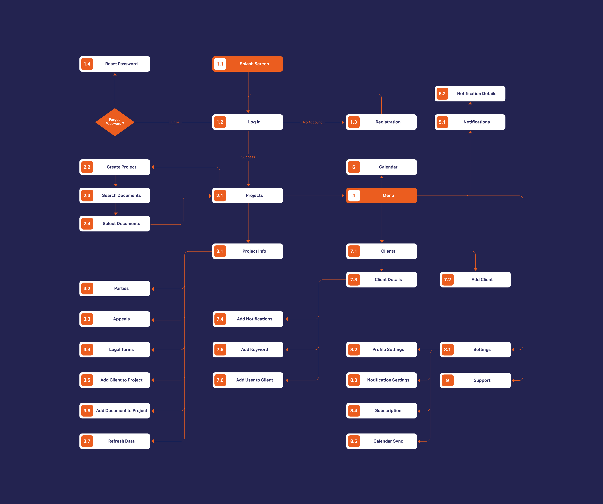
Some bumps in the road will always occur throughout a project, but keeping them at a minimum rate is a goal that matters to me. What always helped was creating a user flow, which is the most basic visualization of what needs to be built. By creating it, me and my colleagues managed to get on the same page early on.
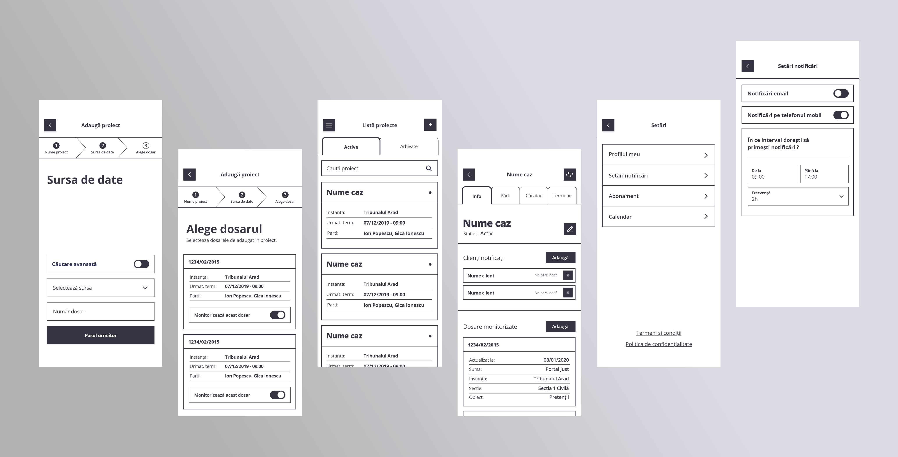
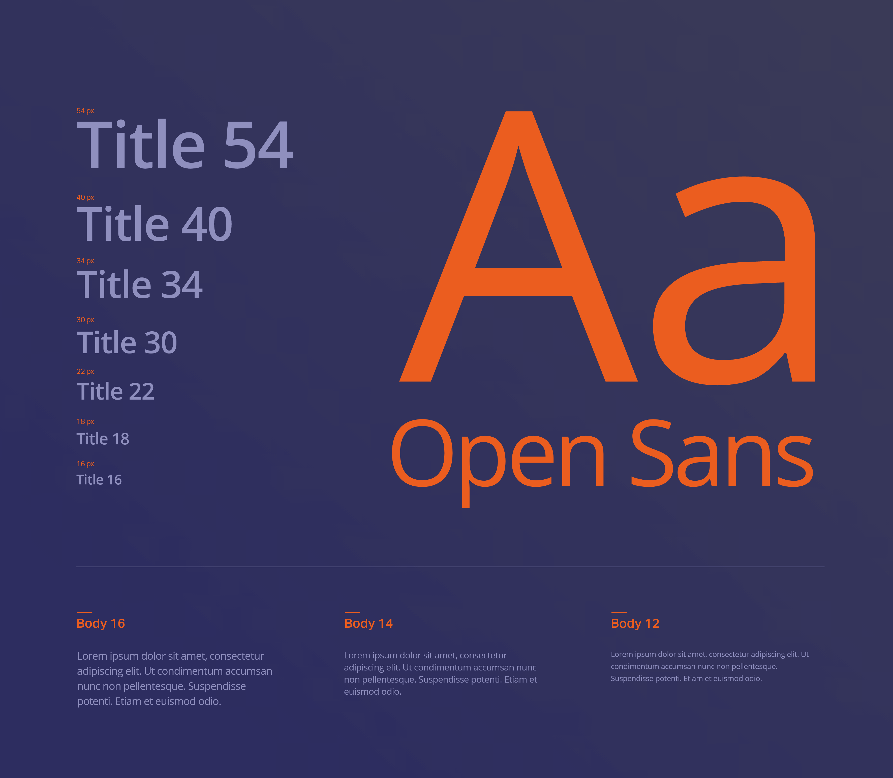
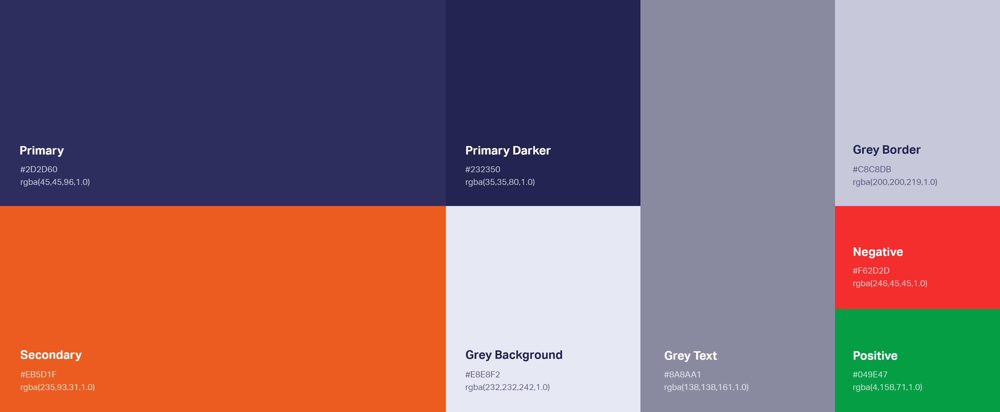
Building an initial set of typography styles and colors was an essential first step of the visual design phase. This ensured a balanced and consistent result.
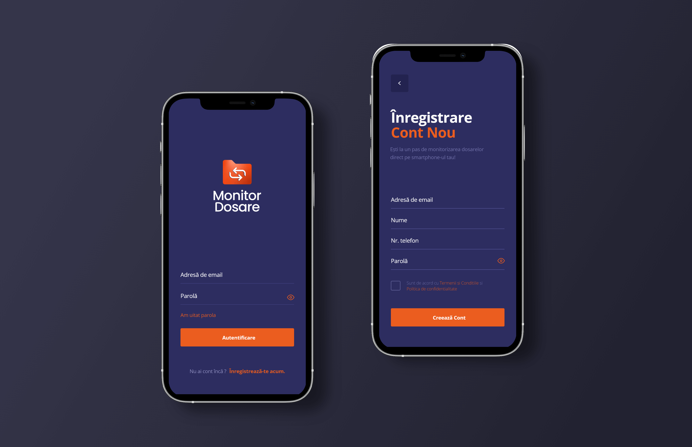
The app helps attorneys organize their court documents by saving them into projects dedicated to each court case.

To create a project, they must complete a form divided into steps. Firstly, they give the project a name, then input details about the desired documents. In the final step, they save the relevant documents from a list of results. With the goal of reducing user’s cognitive load and effort in mind, I grouped related elements in the most efficient way. I placed the process details at the top and the form at the bottom.
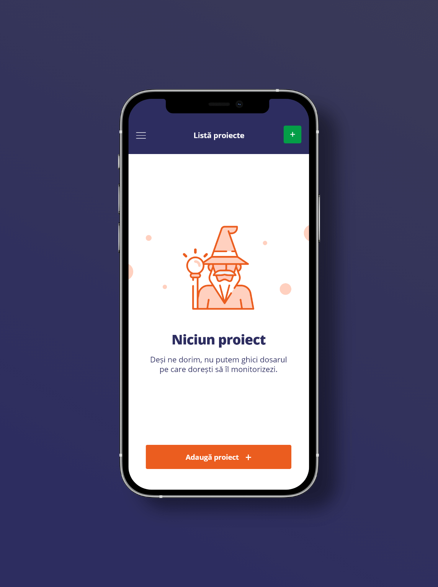
The list of projects was designed to be easily browsed. The project card contains the most relevant details that help identify them. Clarity and ease of scanning were achieved through proper hierarchy and highlighting the essential information.
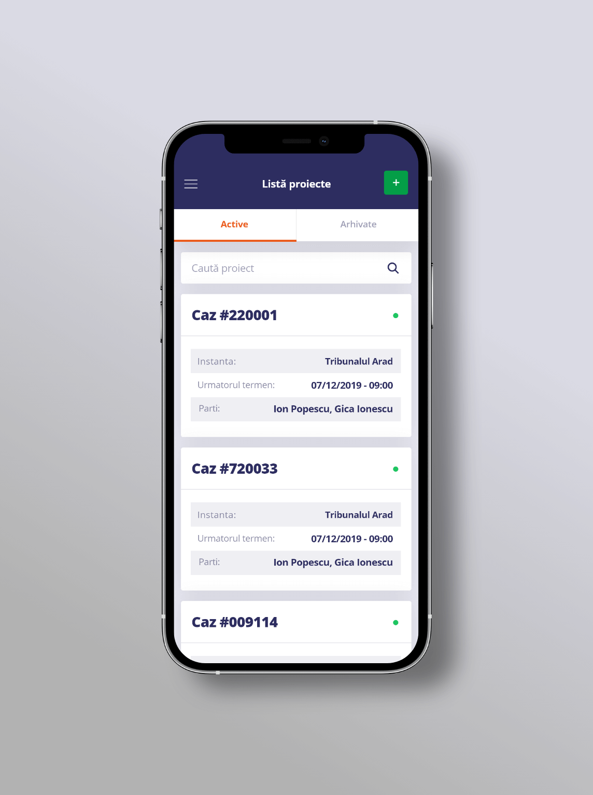
Browsing the details of a project is possible through a tab navigator. This solution ensures effortless navigation, with minimal taps needed from the user.
The tabs reflect the main structure of a court document. It is comprised of the parties involved in the trial, appeals and decisions of the court. The project is managed on the "Info" tab. Here, the user can rename or archive the project, and add more court documents and notified clients.
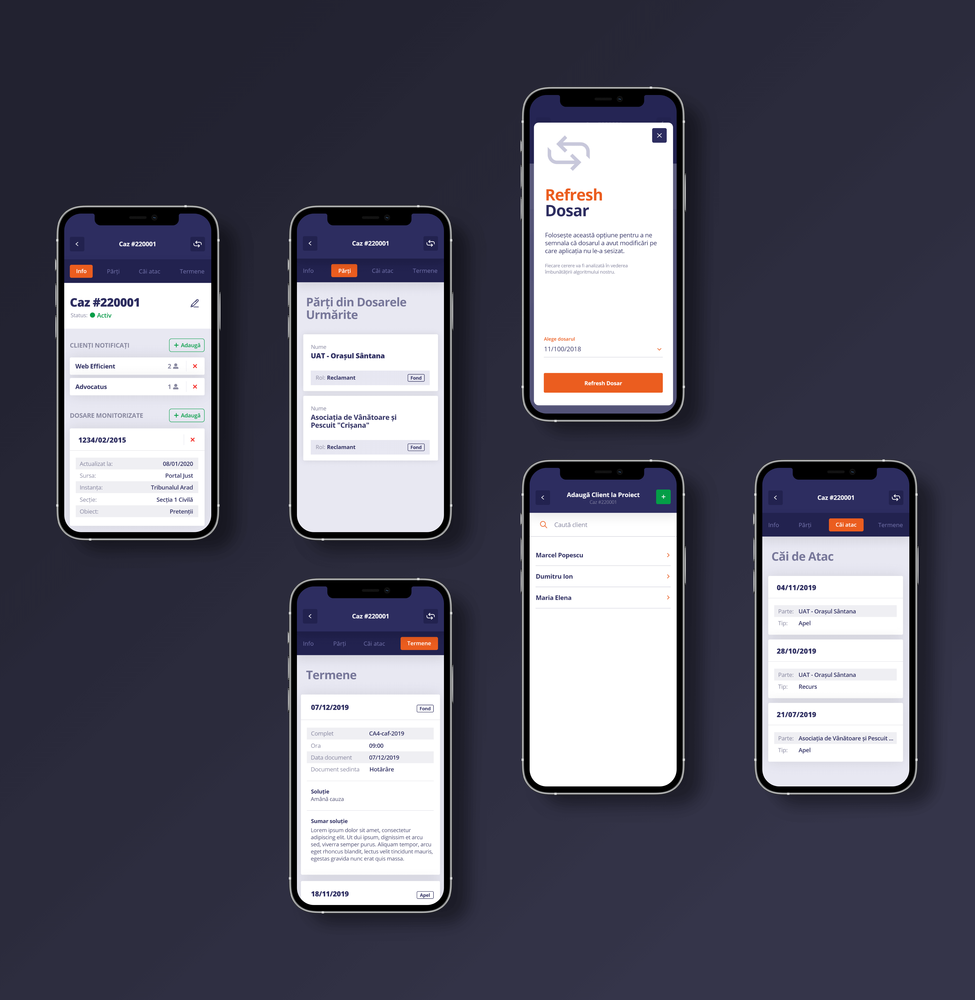

The app also helps attorneys keep up with all their court updates. For each update, they receive a notification. I was careful to create a great contrast ratio between the unread and read notifications.
Settings that allow users to customize their experience are indispensable in an application. To avoid overwhelming them, I designed a simple menu for the main categories, and I made the entire section distinctive by using a dark color palette.
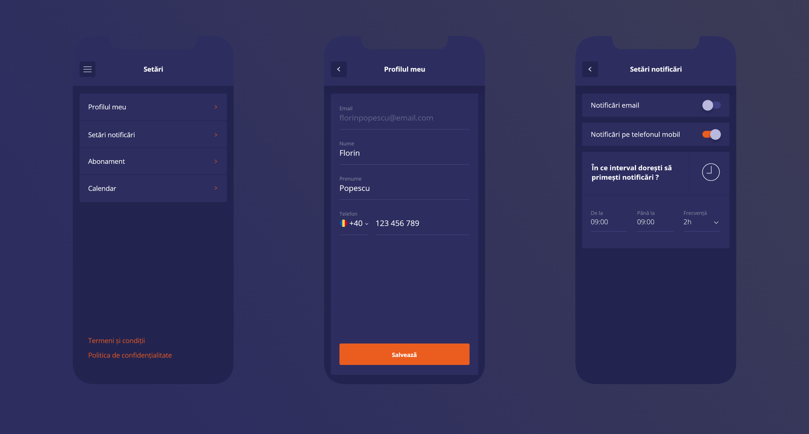
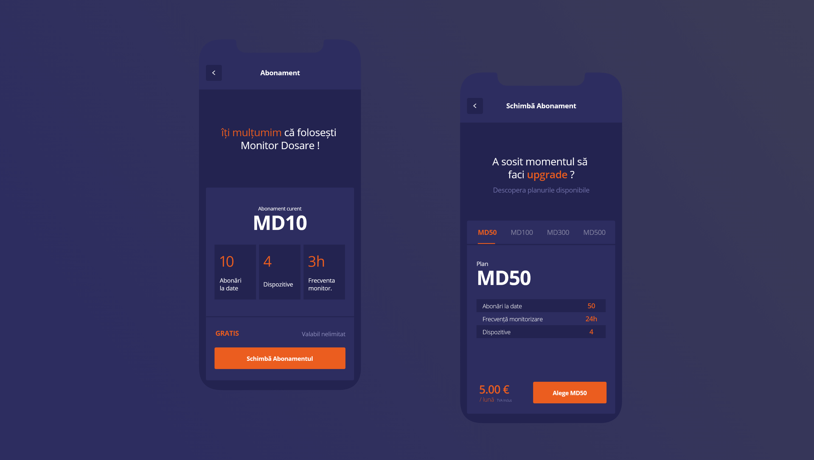
Creating the app was possible because of the monetization plan. For us, it was important to create a frictionless experience when upgrading or downgrading the premium plan. Clear details and no hidden information were the goals that guided my work.
After we validated the design of the mobile app, I worked on extending it on desktop screens.


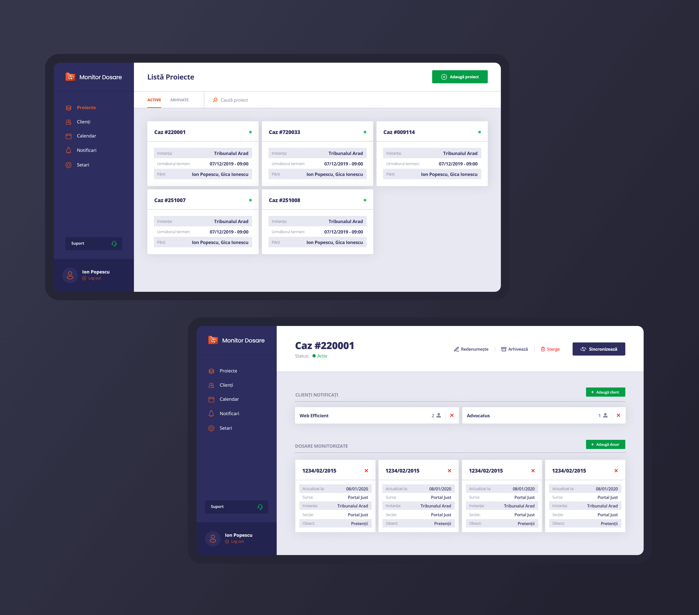